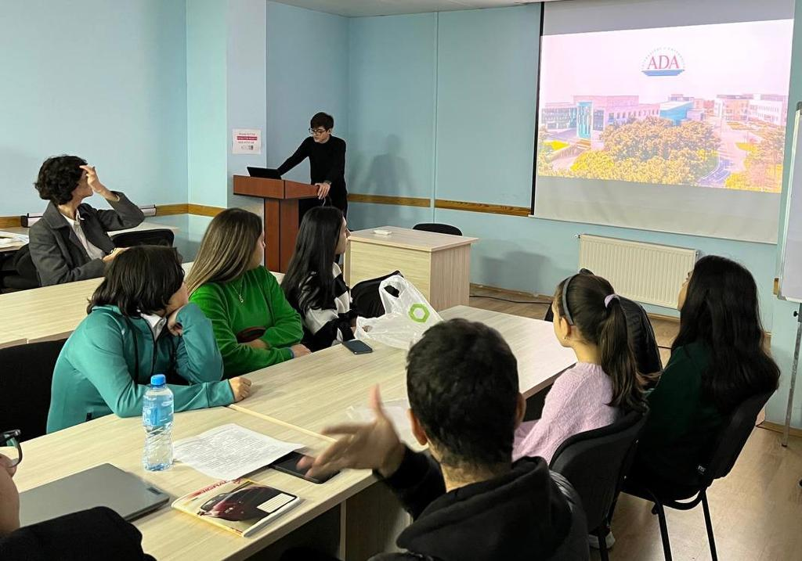
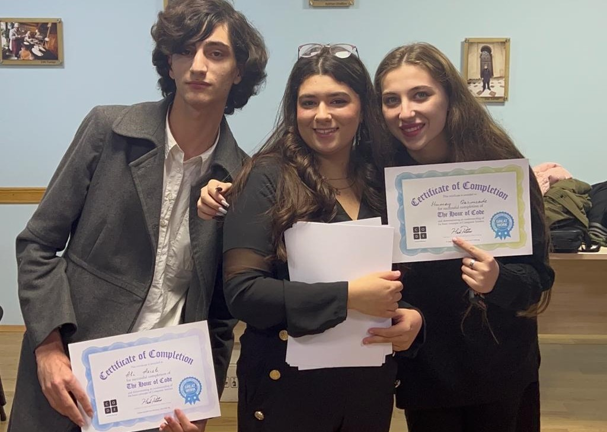

About Our Hour-of-Code Event
Place: Conference Room of Azerbaijani Alumni Associations (AAA), American Councils, Caspian Business Center, Jafar Jabbarli 40
Date: November 15, 2022
The “Hour of Code” is a one-hour introduction to coding conducted by playing basic and fun games in order to let anyone into the world of programming. Nargiz Hasanova, Rufiz Bayramov, Fuad Gasimov, Vidadi Nabiyev have hosted this event in Caspian Business Center on November 15th for 1 hour. They used a basic game on website code.org where a student had to pass 20 levels of the game by dragging boxes with basic actions that a character must do in order to achieve the goal.

At the beginning of the event, we introduced ourselves, and Vidadi made a presentation in Azerbaijani where he talked about the history of ADA University, described the opportunities it offers, the successes of the School of IT and Engineering, and the available majors for each group. As Vidadi finished discussing the main points of our presentation, we moved on to coding on Code.org and solving basic maze problems. For sure, this part was the most prolific. Students worked on the game on code.org. They had plenty of questions related to logic of the game however, everyone could manage to keep up.
As soon as we finished solving these stages, Fuad, Rufiz, Vidadi, and Nargiz started to help each student with solving code.org. We displayed the tasks on the board and students were following along. Additionally, students asked some more questions regarding ADA University, and we gave them more detailed information as current students of ADA University. The event ended with applauses to one another and award ceremony. Every participant was granted with a certificate of completion of "Hour of Code", and we took a group picture.
